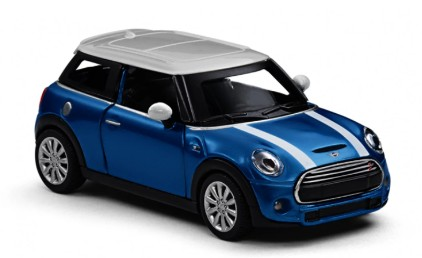

Mini-cooper Azul Metálico
Escala: 1:24
Material: Liga metálica e plástico ABS
Ano de Fabricação: 2023
Detalhes: Réplica fiel do modelo original com portas que abrem, rodas funcionais, pintura premium e acabamento interno detalhado. Ideal para colecionadores exigentes.